“The human brain has 100 billion neurons, each neuron connected to 10 thousand other neurons. Sitting on your shoulders is the most complicated object in the known universe.”
The khipu (or quipu) is an ancient Incan device used for record-keeping and communication. It relied on a complex system of knotted cords to encode and transmit information. Made from colored threads and a variety of knots, each string and knot pattern represented specific data, such as census records or calendrical information. Interpreters, known as quipucamayocs, acted as a kind of accountant and decoded the stringed narrative into understandable information.
I began with inanimate objects living in a world of forces, and I gave them desires, autonomy, and the ability to take action according to a system of rules. Next, I allowed those objects, now called creatures, to live in a population and evolve over time. Now I’d like to ask: What is each creature’s decision-making process? How can it adjust its choices by learning over time? Can a computational entity process its environment and generate a decision?
To answer these questions, I’ll once again look to nature for inspiration—specifically, the human brain. A brain can be described as a biological neural network, an interconnected web of neurons transmitting elaborate patterns of electrical signals. Within each neuron, dendrites receive input signals, and based on those inputs, the neuron fires an output signal via an axon (see Figure 10.1). Or something like that. How the human brain actually works is an elaborate and complex mystery, one that I’m certainly not going to attempt to unravel in rigorous detail in this chapter.
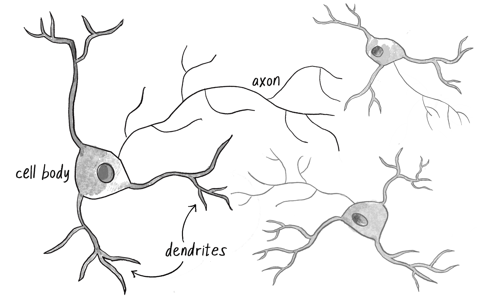
Figure 10.1 An illustration of a neuron with dendrites and an axon connected to another neuron
Fortunately, as you’ve seen throughout this book, developing engaging animated systems with code doesn’t require scientific rigor or accuracy. Designing a smart rocket wasn’t rocket science, and neither is designing an artificial neural network brain science. It’s enough to simply be inspired by the idea of brain function.
In this chapter, I’ll begin with a conceptual overview of the properties and features of neural networks and build the simplest possible example of one, a network that consists of a single neuron. I’ll then introduce you to more complex neural networks using the ml5.js library. This will serve as a foundation for Chapter 11, the grand finale of this book, where I’ll combine genetic algorithms with neural networks for physics simulation.
Introducing Artificial Neural Networks
Computer scientists have long been inspired by the human brain. In 1943, Warren S. McCulloch, a neuroscientist, and Walter Pitts, a logician, developed the first conceptual model of an artificial neural network. In their paper, “A Logical Calculus of the Ideas Immanent in Nervous Activity,” they describe the concept of a neuron as a single computational cell living in a network of cells that receives inputs, processes those inputs, and generates an output.
Their work, and the work of many scientists and researchers that followed, wasn’t meant to accurately describe how the biological brain works. Rather, an artificial neural network (hereafter referred to as just a neural network) was intended as a computational model based on the brain, designed to solve certain kinds of problems that were traditionally difficult for computers.
There are some problems that are incredibly simple for a computer to solve, but difficult for humans like you and me. Finding the square root of 964,324 is an example. A quick line of code produces the value 982, a number my computer can compute in less than a millisecond, but if you asked me to calculate that number myself, you’d be in for quite a wait. On the other hand, there are certain problems that are incredibly simple for you or me to solve, but not so easy for a computer. Show any toddler a picture of a kitten or puppy and they’ll be able to tell you very quickly which one is which. Listen to a conversation in a noisy café and focus on just one person’s voice, and you can effortlessly comprehend their words. But need a machine to perform one of these tasks? Scientists have spent entire careers researching and implementing complex solutions, and neural networks are one of them.
Here are some of the “easy-for-a-human, difficult-for-a-machine” applications of neural networks in software today.
Pattern Recognition. Neural networks are well suited to problems where the aim is to detect, interpret, and classify features or patterns within a dataset. This includes everything from identifying objects (like faces) in images, to optical character recognition, to more complex tasks like gesture recognition.
Time Series Prediction and Anomaly Detection. Neural networks are utilized both in forecasting, such as predicting stock market trends or weather patterns, and in recognizing anomalies, which can be applied to areas like cyberattack detection and fraud prevention.
Natural Language Processing (NLP). One of the biggest developments in recent years has been the use of neural networks for processing and understanding human language. They’re used in various tasks including machine translation, sentiment analysis, text summarization, and are the underlying technology behind many digital assistants and chatbots.
Signal Processing and Soft Sensors. Neural networks play a crucial role in devices like cochlear implants and hearing aids by filtering noise and amplifying essential sounds. They’re also involved in “soft sensors,” software systems that process data from multiple sources to give a comprehensive analysis of the environment.
Control and Adaptive Decision-Making Systems. These applications range from autonomous vehicles like self-driving cars and drones, to adaptive decision-making used in game playing, pricing models, and recommendation systems on media platforms.
Generative Models. The rise of novel neural network architectures has made it possible to generate new content. These systems can synthesize images, enhance image resolution, transfer style between images, and even generate music and video.
Covering the full gamut of applications for neural networks would merit an entire book (or series of books), and by the time that book was printed, it would probably be out of date. Hopefully, this list it gives you an overall sense of the features and possibilities.
How Neural Networks Work
In some ways, neural networks are quite different from other computer programs. The computational systems I’ve been writing so far in this book are procedural: a program starts at the first line of code, executes it, and goes on to the next, following instructions in a linear fashion. By contrast, a true neural network doesn’t follow a linear path. Instead, information is processed collectively, in parallel, throughout a network of nodes, with each node representing a neuron. In this sense, a neural network is considered a connectionist system.
In other ways, neural networks aren’t so different from some of the program’s you’ve seen. A neural network exhibits all the hallmarks of a complex system, much like a cellular automaton or a flock of boids. Remember how each individual boid was simple to understand, yet by following only three rules—separation, alignment, cohesion—it contributed to complex behaviors? Each individual element in a neural network is equally simple to understand. It reads an input (a number), processes it, and generates an output (another number). That’s all there is to it, and yet a network of many neurons can exhibit incredibly rich and intelligent behaviors, echoing the complex dynamics seen in a flock of boids.
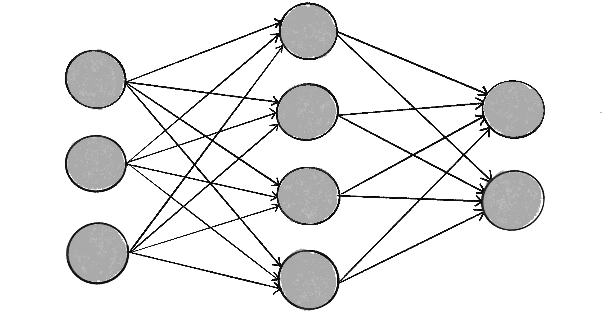
Figure 10.2: A neural network is a system of neurons and connections.
In fact, a neural network isn’t just a complex system, but a complex adaptive system, meaning it can change its internal structure based on the information flowing through it. In other words, it has the ability to learn. Typically, this is achieved by adjusting weights. In Figure 10.2, each arrow represents a connection between two neurons and indicates the pathway for the flow of information. Each connection has a weight, a number that controls the signal between the two neurons. If the network generates a “good” output (which I’ll define later), there’s no need to adjust the weights. However, if the network generates a “poor” output—an error, so to speak—then the system adapts, altering the weights with the hope of improving subsequent results.
There are several strategies for learning, and I’ll focus on one of them in this chapter.
Supervised Learning. Essentially, a strategy that involves a teacher that’s smarter than the network itself. Take the case of facial recognition. The teacher shows the network a bunch of faces, and the teacher already knows the name associated with each face. The network makes its guesses, then the teacher provides the network with the actual names. The network can then compare its answers to the known “correct” ones and make adjustments according to its errors. The neural networks in this chapter will follow this model.
Unsupervised Learning. This technique is required when there isn’t an example dataset with known answers. Instead, the network works on its own to uncover hidden patterns in the data. An application of this is clustering, where a set of elements is divided into groups according to some unknown pattern. I won’t be showing at any instances of unsupervised learning, as the strategy is less relevant to the book’s examples.
Reinforcement Learning. A strategy built on observation, where a learning agent makes decisions and looks to its environment for the results. It’s rewarded for good decisions and penalized for bad decisions, such that it learns to make better decisions over time. I’ll discuss this strategy in more detail in the next chapter.
The ability of a neural network to learn, to make adjustments to its structure over time, is what makes it so useful in the field of machine learning. This term can be traced back to a 1959 paper titled “Some Studies in Machine Learning Using the Game of Checkers,” in which computer scientist Arthur Lee Samuel outlines a “self-learning” program for playing checkers. The concept of an algorithm enabling a computer to learn without explicit programming is the foundation of machine learning.
Think about what you’ve been doing throughout this book: coding! In traditional programming, a computer program takes inputs and, based on the rules you’ve provided, produces outputs. Machine learning, however, turns this approach upside down. Instead of you writing the rules, the system is given example inputs and outputs, and it generates the rules itself! Many algorithms can be used to implement machine learning, and a neural network is just one of them.
Machine learning is part of the broad, sweeping field of artificial intelligence (AI), although the terms are sometimes used interchangeably. In their thoughtful and friendly primer A People’s Guide to AI, Mimi Onuoha and Mother Cyborg define AI as “the theory and development of computer systems able to perform tasks that normally require human intelligence.” Machine learning algorithms are one approach to these tasks, but not all AI systems feature a “self-learning” component.
Machine Learning Libraries
Today, leveraging machine learning in creative coding and interactive media isn’t only feasible but increasingly common, thanks to third-party libraries that handle a lot of the neural network implementation details under the hood. While the vast majority of machine learning development and research is done in Python, the world of web development has seen the emergence of powerful JavaScript-based tools. Two libraries of note are TensorFlow.js and ml5.js. TensorFlow.jsis an open-source library that lets you define, train, and run neural networks directly in the browser using JavaScript, without the need to install or configure complex environments. It’s part of the TensorFlow ecosystem, which is maintained and developed by Google.
TensorFlow.js is a powerful tool, but its low-level operations and highly technical API can be intimidating to beginners. Enter ml5.js, a library built on top of TensorFlow.js and designed specifically for use with p5.js. Its goal is to be beginner friendly and make machine learning approachable for a broad audience of artists, creative coders, and students. I’ll demonstrate how to use ml5.js later in this chapter.
A benefit of libraries like TensorFlow.js and ml5.js is that you can use them to run pretrained models. A machine learning model is a specific setup of neurons and connections, and a pretrained model is one that has already been prepared for a particular task. For example, there are popular pretrained models for classifying images, identifying body poses, recognizing facial landmarks or hand positions, and even analyzing the sentiment expressed in a text. You can use such a model “as is” or treat it as a starting point for additional learning (commonly referred to as transfer learning).
Before I get to exploring the ml5.js library, however, I’d like to try my hand at building the simplest of all neural networks from scratch, using only p5.js, to illustrate how the concepts of neural networks and machine learning are implemented in code.
The Perceptron
A perceptron is the simplest neural network possible: a computational model of a single neuron. Invented in 1957 by Frank Rosenblatt at the Cornell Aeronautical Laboratory, a perceptron consists of one or more inputs, a processor, and a single output, as shown in Figure 10.3.
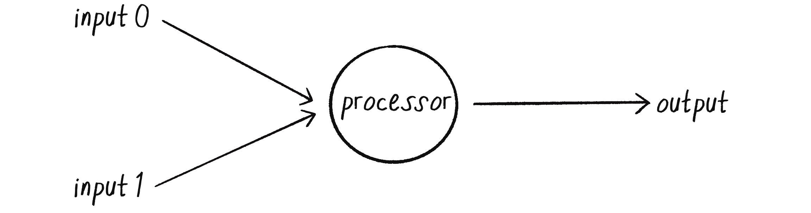
Figure 10.3: A simple perceptron with two inputs and one output
A perceptron follows the feed-forward model, where data passes (”feeds”) through the network in one direction. The inputs are sent into the neuron, are processed, and result in an output. This means the one-neuron network diagrammed in Figure 10.3 reads from left to right (”forward”): inputs come in, output goes out.
Say I have a perceptron with two inputs, the values 12 and 4. In machine learning learning, it’s customary to denote each input with an x, so I’ll call these inputs x_0 and x_1.
Input
Value
x_0
12
x_1
4
To get from these inputs to an output, the perceptron follows a series of steps.
Step 1: Weight the inputs.
Each input sent into the neuron must first be weighted, meaning it’s multiplied by some value, often a number between –1 and +1. When creating a perceptron, the inputs are typically assigned random weights. I’ll call my weights w_0 and w_1
Weight
Value
w_0
0.5
w_1
-1
Each input needs to be multiplied by its corresponding weight.
Input
Weight
Input \times Weight
12
0.5
6
4
–1
–4
Step 2: Sum the inputs.
The weighted inputs are then added together.
6 + -4 = 2
Step 3: Generate the output.
The output of a perceptron is produced by passing the sum through an activation function that reduces the output to one of two possible values. Think of this binary output as an LED that’s only “off” or “on,” or as a neuron in an actual brain that either fires or doesn’t fire. The activation function determines whether the perceptron should “fire.”
Activation functions can get a little bit hairy. If you start reading about them in an artificial intelligence textbook, you may soon find yourself reaching in turn for a calculus textbook. However, with your new friend the simple perceptron, there’s an easier option that still demonstrates the concept. I’ll make the activation function the sign of the sum. If the sum is a positive number, the output is 1; if it’s negative, the output is –1.
\text{sign}(2) = +1
Putting it together, here are the steps of the perceptron algorithm:
For every input, multiply that input by its weight.
Sum all of the weighted inputs.
Compute the output of the perceptron by passing that sum through an activation function (the sign of the sum).
I can start writing this algorithm in code using two arrays of values, one for the inputs and one for the weights.
let inputs = [12, 4];
let weights = [0.5, -1];
The “for every input” in step 1 implies a loop that multiplies each input by its corresponding weight. To obtain the sum, the results can be added up in that same loop.
// Steps 1 and 2: Add up all the weighted inputs.
let sum = 0;
for (let i = 0; i < inputs.length; i++) {
sum += inputs[i] * weights[i];
}
With the sum, I can then compute the output.
// Step 3: Pass the sum through an activation function.
let output = activate(sum);
// The activation function
function activate(sum) {
//{!5} Return a 1 if positive, -1 if negative.
if (sum > 0) {
return 1;
} else {
return -1;
}
}
You might be wondering about how I’m handling the value of 0 in the activation function. Is 0 positive or negative? The deep philosophical implications of this question aside, I’m choosing here to arbitrarily return a –1 for 0, but I could easily change the > to >= to go the other way. Depending on the application, this decision could be signification, but for demonstration purposes here, I can just pick one.
Now that I’ve explained the computational process of a perceptron, let’s take a look at an example of one in action.
Simple Pattern Recognition Using a Perceptron
I’ve mentioned earlier that neural networks are commonly used for pattern recognition. The scenarios outlined earlier require more complex networks, but even a simple perceptron can demonstrate a fundamental type of pattern recognition in which data points are classified as belonging to one of two groups. For instance, imagine you have a dataset of plants and you want to identify them as either xerophytes (plants that have evolved to survive in an environment with little water and lots of sunlight, like the desert) or hydrophytes (plants that have adapted to living submerged in water, with reduced light.) That’s how I’ll use my perceptron in this section.
One way to approach classifying the plants is to plot their data on a 2D graph and treat the problem as a spatial one. On the x-axis, plot the amount of daily sunlight received by the plant, and on the y-axis, plot the amount of water. Once all the data has been plotted, it’s easy to draw a line across the graph, with all the xerophytes on one side and all the hydrophytes on the other, as in Figure 10.4. (I’m simplifying a little here. Real-world data would probably have more messiness to it, making the line harder to draw.) That’s how each plant can be classified. Is it below the line? Then it’s a xerophyte. Is it above the line? Then it’s a hydrophyte.
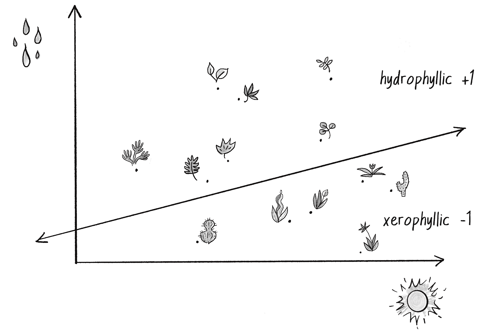
Figure 10.4: A collection of points in two dimensional space divided by a line, representing plant categories according to their water and sunlight intake
In truth, I don’t need a neural network—not even a simple perceptron—to tell me whether a point is above or below a line. I can see the answer for myself with my own eyes, or have my computer figure it out with some simple algebra. But just like solving a problem with a known answer—”to be or not to be”—was a convenient first test for the genetic algorithm in Chapter 9, training a perceptron to categorize points as being on one side of a line versus the other will be a valuable way to demonstrate the algorithm of the perceptron and verify that it’s working properly.
To solve this problem, I’ll give my perceptron two inputs: x_0 is the x coordinate of a point, representing a plant’s amount of sunlight, and x_1 is the y coordinate of that point, representing the plant’s amount of water. The perceptron then guesses the plant’s classification according to the sign of the weighted sum of these inputs. If the sum is positive, the perceptron outputs a +1, signifying a hydrophyte (above the line). If the sum is negative, it outputs a –1, signifying a xerophyte (below the line). Figure 10.5 shows this perceptron, (note the shorthand of w_0 and w_1 for the weights).
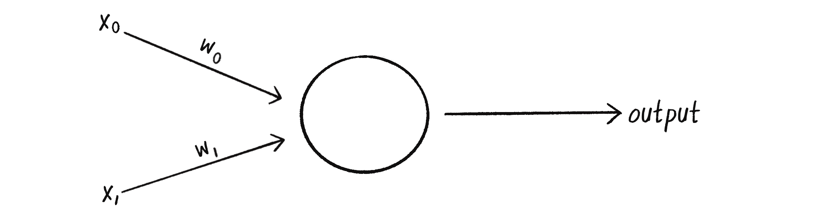
Figure 10.5 A perceptron with two inputs (x_0 and x_1), a weight for each input (w_0 and w_1) as well as a processing neuron that generates the output.
There’s a pretty significant problem with this scheme, however. What if my data point is (0,0), and I send this point into the perceptron as inputs x_0 = 0 and x_1=0? No matter what the weights are, multiplication by 0 is 0. The weighted inputs are therefore still 0, and their sum will be 0, too. And the sign of 0 is . . . hmmm, there’s that deep philosophical quandary again. Regardless of how I feel about it, the point (0,0) could certainly be above or below various lines in a two-dimensional world. How is the perceptron supposed to interpret it accurately?
To avoid this dilemma, the perceptron requires a third input, typically referred to as a bias input. This extra input always has the value of 1 and is also weighted. Figure 10.6 shows the perceptron with the addition of the bias.
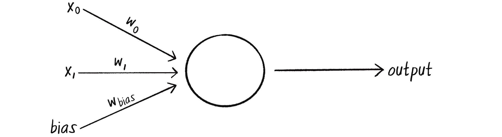
Figure 10.6: Adding a bias input, along with its weight, to the perceptron
How does this affect point (0,0)?
Input value
Weight
Result
0
w_0
0
0
w_1
0
1
w_\text{bias}
w_\text{bias}
The output is then the sum of the weighted results: 0 + 0 + w_\text{bias}. Therefore, the bias by itself answers the question of where (0,0) is in relation to the line. If the bias’s weight is positive, then (0,0) is above the line; if negative, it’s below. The extra input and its weight bias the perceptron’s understanding of the line’s position relative to (0,0)!
The Perceptron Code
I’m now ready to assemble the code for a Perceptron class. The perceptron only needs to track the input weights, which I can store using an array.
class Perceptron {
constructor() {
this.weights = [];
}
The constructor can receive an argument indicating the number of inputs (in this case, three: x_0, x_1, and a bias) and size the weights array accordingly, filling it with random values to start.
// The argument n determines the number of inputs (including the bias).
constructor(n) {
this.weights = [];
for (let i = 0; i < n; i++) {
//{!1} The weights are picked randomly to start.
this.weights[i] = random(-1, 1);
}
}
A perceptron’s job is to receive inputs and produce an output. These requirements can be packaged together in a feedForward() method. In this example, the perceptron’s inputs are an array (which should be the same length as the array of weights), and the output is a number, +1 or –1, as returned by the activation function based on the sign of the sum.
feedForward(inputs) {
let sum = 0;
for (let i = 0; i < this.weights.length; i++) {
sum += inputs[i] * this.weights[i];
}
//{!1} Result is the sign of the sum, -1 or +1.
// Here the perceptron is making a guess.
// Is it on one side of the line or the other?
return this.activate(sum);
}
Presumably, I could now create a Perceptron object and ask it to make a guess for any given point, as in Figure 10.7.
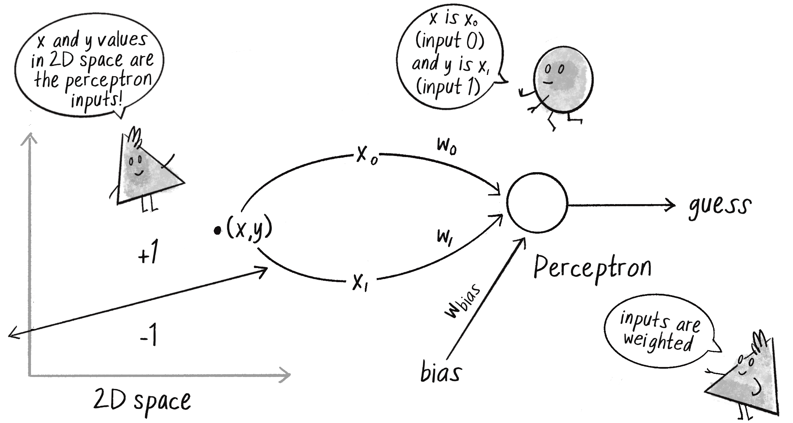
Figure 10.7: An (x, y) coordinate from the two-dimensional space is the input to the perceptron.
Here’s the code to generate a guess:
// Create the perceptron.
let perceptron = new Perceptron(3);
// The input is 3 values: x, y, and bias.
let inputs = [50, -12, 1];
// The answer!
let guess = perceptron.feedForward(inputs);
Did the perceptron get it right? Maybe yes, maybe no. At this point, the perceptron has no better than a 50/50 chance of arriving at the correct answer, since each weight starts out as a random value. A neural network isn’t a magic tool that can automatically guess things correctly on its own. I need to teach it how to do so!
To train a neural network to answer correctly, I’ll use the supervised learning method I described earlier in the chapter. Remember, this technique involves giving the network inputs with known answers. This enables the network to check if it has made a correct guess. If not, the network can learn from its mistake and adjust its weights. The process is as follows:
Provide the perceptron with inputs for which there is a known answer.
Ask the perceptron to guess an answer.
Compute the error. (Did it get the answer right or wrong?)
Adjust all the weights according to the error.
Return to step 1 and repeat!
This process can be packaged into a method on the Perceptron class, but before I can write it, I need to examine steps 3 and 4 in more detail. How do I define the perceptron’s error? And how should I adjust the weights according to this error?
The perceptron’s error can be defined as the difference between the desired answer and its guess.
This was also a calculation of an error! The current velocity serves as a guess, and the error (the steering force) indicates how to adjust the velocity in the correct direction. Adjusting a vehicle’s velocity to follow a target is similar to adjusting the weights of a neural network towards the correct answer.
In the case of the perceptron, the output has only two possible values: +1 or –1. This means there are only three possible errors. If the perceptron guesses the correct answer, then the guess equals the desired output and the error is 0. If the correct answer is –1 and it guessed +1, then the error is –2. If the correct answer is +1 and it guessed –1, then the error is +2.
Desired
Guess
Error
-1
-1
0
-1
+1
-2
+1
-1
+2
+1
+1
0
The error is the determining factor in how the perceptron’s weights should be adjusted. For any given weight, what I’m looking to calculate is the change in weight, often called \Delta\text{weight} (or “delta” weight, \Delta being the Greek letter delta).
To understand why this works, think again about steering. A steering force is essentially an error in velocity. By applying a steering force as an acceleration (or \Delta\text{velocity}), then the velocity is adjusted to move in the correct direction. This is what I want to do with the neural network’s weights. I want to adjust them in the right direction, as defined by the error.
With steering, however, I had an additional variable that controlled the vehicle’s ability to steer: the maximum force. A high maximum force allowed the vehicle to accelerate and turn quickly, while a lower force resulted in a slower velocity adjustment. The neural network will use a similar strategy with a variable called the learning constant.
A high learning constant causes the weight to change more drastically. This may help the perceptron arrive at a solution more quickly, but it also increases the risk of overshooting the optimal weights. A small learning constant will adjust the weights more slowly and require more training time, but it will allow the network to make small adjustments that could improve overall accuracy.
Assuming the addition of a learningConstant property to the Perceptronclass, I can now write a training method for the perceptron following the steps I outlined earlier.
// Step 1: Provide the inputs and known answer.
// These are passed in as arguments to train().
train(inputs, desired) {
// Step 2: Guess according to those inputs.
let guess = this.feedforward(inputs);
// Step 3: Compute the error (difference between desired and guess).
let error = desired - guess;
//{!3} Step 4: Adjust all the weights according to the error and learning constant.
for (let i = 0; i < this.weights.length; i++) {
this.weights[i] = this.weights[i] + error * inputs[i] * this.learningConstant;
}
}
Here’s the Perceptron class as a whole.
class Perceptron {
constructor(totalInputs) {
//{!2} The Perceptron stores its weights and learning constants.
this.weights = [];
this.learningConstant = 0.01;
//{!3} The weights start off random.
for (let i = 0; i < totalInputs; i++) {
this.weights[i] = random(-1, 1);
}
}
//{!7} Return an output based on inputs.
feedforward(inputs) {
let sum = 0;
for (let i = 0; i < this.weights.length; i++) {
sum += inputs[i] * this.weights[i];
}
return this.activate(sum);
}
// Output is a +1 or -1.
activate(sum) {
if (sum > 0) {
return 1;
} else {
return -1;
}
}
//{!7} Train the network against known data.
train(inputs, desired) {
let guess = this.feedforward(inputs);
let error = desired - guess;
for (let i = 0; i < this.weights.length; i++) {
this.weights[i] = this.weights[i] + error * inputs[i] * this.learningConstant;
}
}
}
To train the perceptron, I need a set of inputs with known answers. However, I don’t happen to have a real-world dataset (or time to research and collect one) for the xerophytes and hydrophytes scenario. In truth, though, the purpose of this demonstration isn’t to show you how to classify plants. It’s about how a perceptron can learn whether points are above or below a line on a graph, and so any set of points will do. In other words, I can just make the data up.
What I’m describing is an example of synthetic data, artificially generated data that’s often used in machine learning to create controlled scenarios for training and testing. In this case, my synthetic data will consist of a set of random input points, each with a known answer indicating whether the point is above or below a line. To define the line and generate the data, I’ll use simple algebra. This approach allows me to clearly demonstrate the training process and show how the perceptron learns.
The question therefore becomes, how do I pick a point and know whether it’s above or below a line (without a neural network, that is)? A line can be described as a collection of points, where each point’s y coordinate is a function of its x coordinate:
y = f(x)
For a straight line (specifically, a “linear” function), the relationship can be written like this:
y = mx + b
Here m is the slope of the line, and b is the value of y when x is 0 (the y-intercept). Here’s a specific example, with the corresponding graph in Figure 10.8.
y = \frac{1}2x - 1
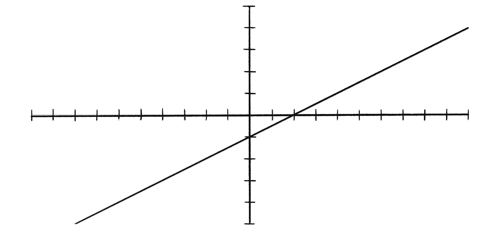
Figure 10.8: A graph of y = \frac{1}2x - 1
I’ll arbitrarily choose that as the equation for my line, and write a function accordingly.
// A function to calculate y based on x along a line
function f(x) {
return 0.5 * x - 1;
}
Now there’s the matter of the p5.js canvas defaulting to (0,0) in the top-left corner with the y-axis pointing down. For this discussion, I’ll assume I’ve built the following into the code to reorient the canvas to match a more traditional Cartesian space.
// Move the origin (0,0) to the center.
translate(width / 2, height / 2);
// Flip the y-axis orientation (positive points up!).
scale(1, -1);
I can now pick a random point in the 2D space.
let x = random(-100, 100);
let y = random(-100, 100);
How do I know if this point is above or below the line? The line function f(x) returns the y value on the line for that x position. I’ll call that y_\text{line}.
// The y position on the line
let yline = f(x);
If the y value I’m examining is above the line, it will be greater than y_\text{line}, as in Figure 10.9.
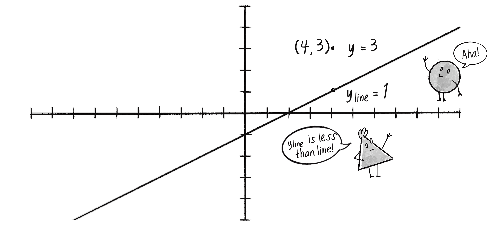
Figure 10.9: If y_\text{line} is less than y, then the point is above the line.
Here’s the code for that logic:
// Start with a value of -1.
let desired = -1;
if (y > yline) {
//{!1} The answer becomes +1 if y is above the line.
desired = 1;
}
I can then make an inputs array to go with the desired output.
// Don’t forget to include the bias!
let trainingInputs = [x, y, 1];
Assuming that I have a perceptron variable, I can train it by providing the inputs along with the desired answer.
perceptron.train(trainingInputs, desired);
If I train the perceptron on a new random point (and its answer) each cycle through draw(), it will gradually get better at classifying the points as above or below the line.
Example 10.1: The Perceptron
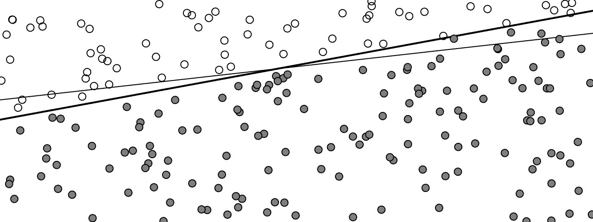
// The perceptron
let perceptron;
//{!1} An array for training data
let training = [];
// A counter to track training data points one by one
let count = 0;
//{!3} The formula for a line
function f(x) {
return 0.5 * x + 1;
}
function setup() {
createCanvas(640, 240);
// The perceptron has 3 inputs (including bias) and a learning rate of 0.01.
perceptron = new Perceptron(3, 0.01);
//{!1} Make 2,000 training data points.
for (let i = 0; i < 2000; i++) {
let x = random(-width / 2, width / 2);
let y = random(-height / 2, height / 2);
training[i] = [x, y, 1];
}
}
function draw() {
background(255);
// Re-orient the canvas to match a traditional Cartesian plane.
translate(width / 2, height / 2);
scale(1, -1);
// Draw the line.
stroke(0);
strokeWeight(2);
line(-width / 2, f(-width / 2), width / 2, f(width / 2));
// Get the current (x,y) of the training data.
let x = training[count][0];
let y = training[count][1];
// What is the desired output?
let desired = -1;
if (y > f(x)) {
desired = 1;
}
// Train the perceptron.
perceptron.train(training[count], desired);
// For animation, train one point at a time.
count = (count + 1) % training.length;
// Draw all the points and color according to the output of the perceptron.
for (let dataPoint of training) {
let guess = perceptron.feedforward(dataPoint);
if (guess > 0) {
fill(127);
} else {
fill(255);
}
strokeWeight(1);
stroke(0);
circle(dataPoint[0], dataPoint[1], 8);
}
}
In Example 10.1, the training data is visualized alongside the target solution line. Each point represents a piece of training data, and its color is determined by the perceptron’s current classification—gray for +1 or white for -1. I use a small learning constant (0.0001) to slow down how the system refines its classifications over time.
An intriguing aspect of this example lies in the relationship between the perceptron’s weights and the characteristics of the line dividing the points—specifically, the line’s slope and y-intercept (the m and b in y=mx+b). The weights in this context aren’t just arbitrary or “magic” values; they bear a direct relationship to the geometry of the dataset. In this case, I’m just using two-dimensional data, but for many machine learning applications the data exists in much higher-dimensional spaces. The weights of a neural network help navigate these spaces, defining “hyperplanes” or decision boundaries that segment and classify the data.
Exercise 10.1
Modify the code from Example 10.1 to also draw the perceptron’s current “decision boundary” during the training process—its best guess for where the line should be. Hint: use the perceptron’s current weights to calculate the line’s equation.
While this Perceptron example offers a conceptual foundation, real-world datasets often feature more diverse and dynamic ranges of input values. For the simplified scenario here, the range of values for x is larger than that for y due to the canvas size of 640 by 240. Despite this, the example still works—after all, the sign activation function doesn’t rely on specific input ranges, and it’s such a straightforward binary classification task. However, real-world data often has much greater complexity in terms of input ranges. To this end, data normalization is a critical step in machine learning. Normalizing data involves mapping the training data to ensure that all inputs (and outputs) conform to a uniform range—typically 0 to 1, or perhaps –1 to 1. This process can improve training efficiency and prevent individual inputs from dominating the learning process. In the next section, using the ml5.js library, I’ll build data normalization into the process.
Exercise 10.2
Instead of using supervised learning, can you train the neural network to find the right weights by using a genetic algorithm?
Exercise 10.3
Incorporate data normalization into the example. Does this improve the learning efficiency?
Putting the “Network” in Neural Network
A perceptron can have multiple inputs, but it’s still just a single, lonely neuron. Unfortunately, that limits the range of problems it can solve. The true power of neural networks comes from the network part. Link multiple neurons together and you’re able to solve problems of much greater complexity.
If you read an AI textbook, it will say that a perceptron can only solve linearly separable problems. If a data set is linearly separable, you can graph it and classify it into two groups simply by drawing a straight line (see Figure 10.10, left). Classifying plants as xerophytes or hydrophytes was a linearly separable problem.
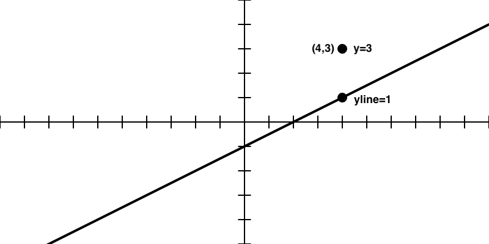
Figure 10.10: The collection of points on the left is linearly separable. The data on the right is nonlinearly separable; a curve is required to separate the points.
Now imagine you’re classifying plants according to soil acidity (x-axis) and temperature (y-axis). Some plants might thrive in acidic soils but only within a narrow temperature range, while other plants prefer less acidic soils but tolerate a broader range of temperatures. There’s a more complex relationship between the two variables, so a straight line can’t be drawn to separate the two categories of plants, “acidophilic” and “alkaliphilic” (see Figure 10.9, right). A lone perceptron can’t handle this type of nonlinearly separable problem. (Caveat here: I’m making up these scenarios. If you happen to be a botanist, please let me know if I’m anywhere close to reality.)
One of the simplest examples of a nonlinearly separable problem is \text{XOR} (“exclusive or”). This is a logical operator, similar to the more familiar \text{AND} and \text{OR}. For A \text{ AND } B to be true, both A and B must be true. With \text{OR}, either A or B (or both) can be true. These are both linearly separable problems. The “truth tables” in Figure 10.11 show their solution space. Each true/false value in the table shows the output for a particular combination of true/false inputs.
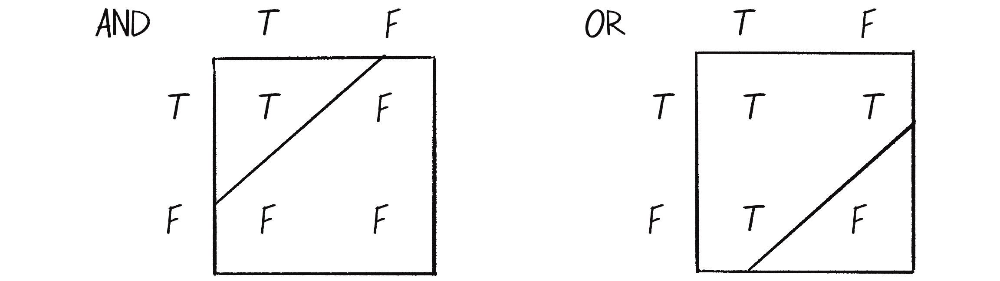
Figure 10.11: Truth tables for the \text{AND} and \text{OR} logical operators. The true and false outputs can be separated by a line.
See how you can draw a straight line to separate the true outputs from the false ones?
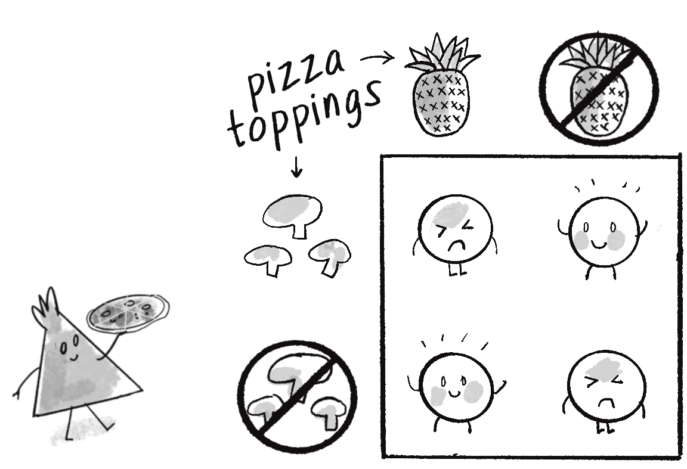
The \text{XOR} operator is the equivalent of \text{(OR) AND (NOT AND)}. In other words, A \text{ XOR } B only evaluates to true if one of the inputs is true. If both inputs are false or both are true, then the output is false. To illustrate, let’s say you’re having pizza for dinner. You love pineapple on pizza, and you love mushrooms on pizza, but put them together and yech! And plain pizza, that’s no good either! Here’s a table to describe that scenario and whether you want to eat the pizza or not.
The truth table version of this is shown in Figure 10.12.
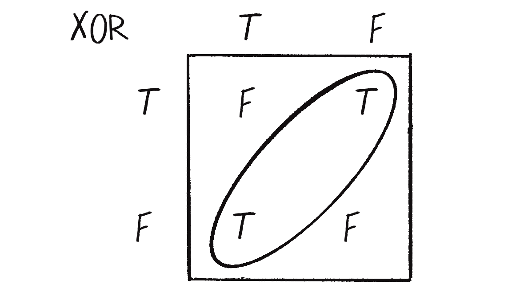
Figure 10.12: The truth table for \text{XOR} (“exclusive or”). Now the true and false outputs can’t be separated by a single line.
The \text{XOR} truth table isn’t linearly separable. Try to draw a straight line to separate the true outputs from the false ones—you can’t!
The fact that a perceptron can’t even solve something as simple as \text{XOR} may seem extremely limiting. But what if I made a network out of two perceptrons? If one perceptron can solve the linearly separable \text{OR} and one perceptron can solve the linearly separate \text{NOT AND}, then two perceptrons combined can solve the nonlinearly separable \text{XOR}.
When you combine multiple perceptrons, you get a multilayered perceptron, a network of many neurons (see Figure 10.13). Some are input neurons and receive the initial inputs, some are part of what’s called a hidden layer (as they’re connected to neither the inputs nor the outputs of the network directly), and then there are the output neurons, from which the results are read.
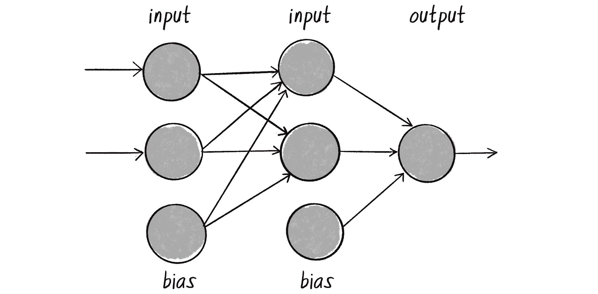
Figure 10.13: A multilayered perceptron has the same inputs and output as the simple perceptron, but now it includes a hidden layer of neurons.
Up until now, I’ve been visualizing a singular perceptron with one circle representing a neuron processing its input signals. Now, as I move on to larger networks, it’s more typical to represent all the elements (inputs, neurons, outputs) as circles, with arrows that indicate the flow of data. In Figure 10.13, you can see the inputs and bias flowing into the hidden layer, which then flows to the output.
Training a simple perceptron is pretty straightforward: you feed the data through and evaluate how to change the input weights according to the error. With a multilayered perceptron, however, the training process becomes more complex. The overall output of the network is still generated in essentially the same manner as before: the inputs multiplied by the weights are summed and fed forward through the various layers of the network. And you still use the network’s guess to calculate the error (\text{desired result} - \text{guess}). But now there are so many different connections between different layers of the network, each with its own weight. How do you know how much each neuron or connection contributed to the overall error of the network, and how it should be adjusted?
The solution to optimizing the weights of a multilayered network is backpropagation. This involves taking the error and feeding it backward through the network so it can adjust the weights of all the connections in proportion to how much they’ve contributed to the total error. The details of backpropagation are beyond the scope of this book. The algorithm involves a variety of different activation functions (one classic example is the “sigmoid” function) as well as some calculus. If you’re interested in continuing down this road and learning more about how backpropagation works, you can find my “toy neural network” project at github.com/CodingTrain, with links to accompanying video tutorials. They go through all the steps of solving \text{XOR} using a multilayered feed-forward network with backpropagation. For this chapter, however, I’d instead like to get some help and phone a friend.
Machine Learning with ml5.js
That friend is ml5.js. This machine learning library can manage the details of complex processes like backpropagation so you and I don’t have to worry about them. As I mentioned earlier in the chapter, ml5.js aims to provide a friendly entry point for those who are new to machine learning and neural networks, while still harnessing the power of Google’s TensorFlow.js behind the scenes.
To use ml5.js in a sketch, you must import it via a <script> element in your index.html file, much like you did with Matter.js and toxiclibs.js in Chapter 6.
My goal for the rest of this chapter will be to introduce ml5.js by developing a system that can recognize mouse gestures. This will prepare you for the next chapter, where I’ll add a neural network “brain” to an autonomous steering agent and tie machine learning back into the story of the book. First, however, I’d like to talk more generally through the steps of training a multilayered neural network model using supervised learning. Outlining these steps will highlight some important decisions you’ll have to make before developing a learning model, introduce some of the syntax of the ml5.js library, and provide you with the context you’ll need before training your own machine learning models.
The Machine Learning Lifecycle
The “lifecycle” of a machine learning model is typically broken down into seven steps.
Collect the data. Data forms the foundation of any machine learning task. This stage might involve running experiments, manually inputting values, sourcing public data, or a myriad of other methods (like generating synthetic data).
Prepare the data. Raw data often isn’t in a format suitable for machine learning algorithms. It might also have duplicate or missing values, or contain outliers that skew the data. Such inconsistencies may need to be manually adjusted. Additionally, as I mentioned earlier, neural networks work best with normalized data, where the values are scaled to fit within a standard range. Another key part of preparing data is separating it into distinct sets: training, validation, and testing. The training data is used to teach the model (step 4), while the validation and testing data (the distinction is subtle—more on this later) are set aside and reserved for evaluating the model’s performance (step 5).
Choose a model. This step involves designing the architecture of the neural network. Different models are more suitable for certain types of data and outputs.
Train the model. This step involves feeding the training portion of the data through the model and allowing the model to adjust the weights of the neural network based on its errors. This process is known as optimization, where the model tunes the weights so they result in the least amount of errors.
Evaluate the model. Remember that testing data that was set aside in step 2? Since that data wasn’t used in training, it provides a means to evaluate how well the model performs on new, unseen data.
Tune the parameters. The training process is influenced by a set of parameters (often called hyperparameters) such as the learning rate, which dictates how much the model should adjust its weights based on errors in prediction. I called this the learningConstant in the perceptron example. By fine-tuning these parameters and revisiting steps 4 (training), 3 (model selection), or even 2 (data preparation), you can often improve the model’s performance.
Deploy the model. Once the model is trained and its performance is evaluated satisfactorily, it’s time to actually use the model out in the real world with new data!
These steps are the cornerstone of supervised machine learning. However, even though 7 is a truly excellent number, I think I missed one more critical step. I’ll call it step 0.
Identify the problem. This initial step involves defining the problem that needs solving. What is the objective? What are you trying to accomplish or predict with your machine learning model?
This zeroth step informs all the other steps in the process. After all, how are you supposed to collect your data and choose a model without knowing what you’re even trying to do? Are you predicting a number? A category? A sequence? Is it a binary choice, or are there many options? These sorts of questions often boil down to choosing between two types of tasks that the majority of machine learning applications fall into: classification and regression.
Classification and Regression
Classification is a type of machine learning problem that involves predicting a label (also called a category or class) for a piece of data. If this sounds familiar, that’s because it is: the simple perceptron in Example 10.1 was trained to classify points as above or below a line. To give another example, an image classifier might try to guess if a photo is of a cat or a dog and assign the corresponding label (see Figure 10.14).
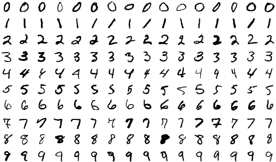
Figure 10.14: Labeling images as cats or dogs
Classification doesn’t happen by magic. The model must first be shown many examples of dogs and cats with the correct labels in order to properly configure the weights of all the connections. This is the training part of supervised learning.
The classic “Hello, world!” demonstration of machine learning and supervised learning is a classification problem known as MNIST. Short for Modified National Institute of Standards and Technology, MNIST is a dataset that was collected and processed by Yann LeCun and Corinna Cortes (AT&T Labs) and Christopher J. C. Burges (Microsoft Research). It’s widely used for training and testing in the field of machine learning and consists of 70,000 handwritten digits from 0 to 9, with each one being a 28 by 28 pixel grayscale image (see Figure 10.15 for some examples). Each image is labeled with its corresponding digit.
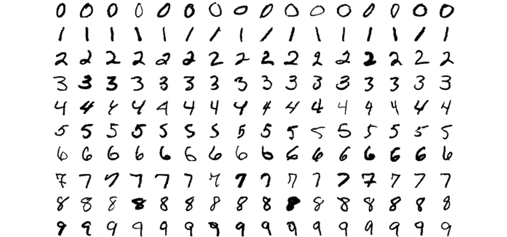
Figure 10.15 A selection of handwritten digits 0-9 from the MNIST dataset (image by Suvanjanprasai, CC-SA-4.0)
MNIST is a canonical example of a training dataset for image classification: there are a discrete number of categories for the model to choose from (10 to be exact—no more, no less). After the model is trained on the 70,000 labeled images, the goal is for it to classify new images and assign the appropriate label, a digit from 0 to 9.
Regression, on the other hand, is a machine learning task where the prediction is a continuous value, typically a floating point number. A regression problem can involve multiple outputs, but when beginning it’s often simpler to think about just one. For example, consider a machine learning model that predicts the daily electricity usage of a house based on input factors like the number of occupants, the size of the house, and the temperature outside (see Figure 10.16).
Figure 10.16: Factors like weather and the size and occupancy of a home can influence its daily electricity usage.
Rather than picking from a discrete set of output options, the goal of the neural network is now to guess a number—any number. Will the house use 30.5 kilowatt-hours of electricity that day? Or 48.7 kWh? Or 100.2 kWh? The output prediction could be any value from a continuous range.
Network Design
Knowing what problem you’re trying to solve (step 0) also has a significant bearing on the design of the neural network itself, in particular on its input and output layers. I’ll demonstrate with another classic “Hello, world!” classification example from the field of data science and machine learning: the iris dataset. This dataset can be found in the University of California Irvine Machine Learning Repository and originated from the work of American botanist Edgar Anderson. Anderson collected flower data over many years across multiple regions of the United States and Canada. (For more on the origins of this famous dataset, see Unwin and Kleinman, “The Iris Data Set: In Search of the Source of Virginica.”) After carefully analyzing the data, he built a table to classify iris flowers into three distinct species: Iris setosa, Iris virginica, and Iris versicolor (see Figure 10.17).
Figure 10.17: Three iris flowers of three distinct species
Anderson included four numeric attributes for each flower: sepal length, sepal width, petal length, and petal width, all measured in centimeters. (He also recorded color information, but that data appears to have been lost.) Each record is then paired with the appropriate iris categorization.
Sepal length
Sepal width
Petal length
Petal width
Classification
5.1
3.5
1.4
0.2
Iris setosa
4.9
3.0
1.4
0.2
Iris setosa
7.0
3.2
4.7
1.4
Iris versicolor
6.4
3.2
4.5
1.5
Iris versicolor
6.3
3.3
6.0
2.5
Iris virginica
5.8
2.7
5.1
1.9
Iris virginica
In this dataset, the first four columns (sepal length, sepal width, petal length, petal width) serve as inputs to the neural network. The output is the classification provided in the fifth column. Figure 10.18 depicts a possible architecture for a neural network that can be trained on this data.
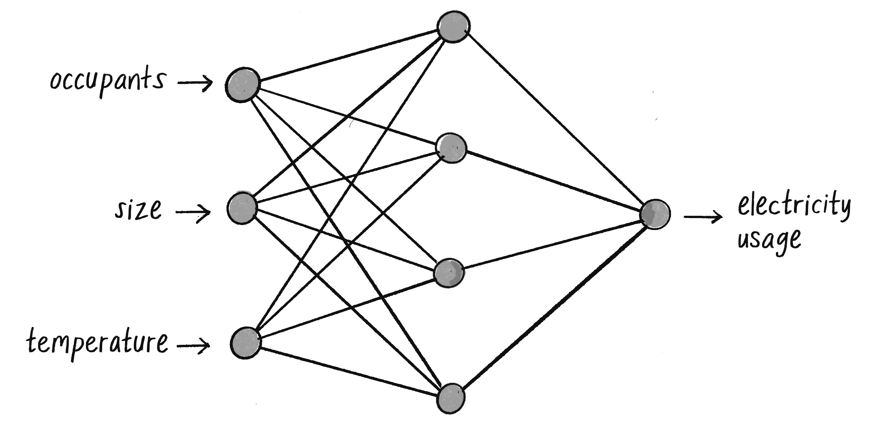
Figure 10.18: A possible network architecture for iris classification
On the left are the four inputs to the network, corresponding to the first four columns of the data table. On the right, there are three possible outputs, each representing one of the iris species labels. In between is the hidden layer, which, as mentioned earlier, adds complexity to the network’s architecture, necessary for handling nonlinearly separable data. Each node in the hidden layer is connected to every node that comes before and after it. This is commonly called a fully connected or dense layer.
You might also notice the absence of explicit bias nodes in this diagram. While biases play an important role in the output of each neuron, they’re often left out of visual representations to keep the diagrams clean and focused on the primary data flow. (The ml5.js library will ultimately manage the biases for me internally.)
The neural network’s goal is to “activate” the correct output for the input data, much like how the perceptron would output a +1 or –1 for its single binary classification. In this case, the output values are like signals that help the network decide which iris species label to assign. The highest computed value “activates” to signify the network’s best guess about the classification.
The key takeaway here is that a classification network should have as many inputs as there are values for each item in the dataset, and as many outputs as there are categories. As for the hidden layer, the design is much less set in stone. The hidden layer in Figure 10.9 has five nodes, but this number is entirely arbitrary. Neural network architectures can vary greatly, and the number of hidden nodes is often determined through trial and error or other educated guessing methods (called “heuristics”). In the context of this book, I’ll be relying on ml5.js to automatically configure the architecture based on the input and output data.
What about the inputs and outputs in a regression scenario, like the household electricity consumption example I mentioned earlier? I’ll go ahead and make up a dataset for this scenario, with values representing the occupants and size of the house, the day’s temperature, and the corresponding electricity usage. This is much like a synthetic dataset, given that it’s not data collected for a real-world scenario, but whereas synthetic data is generated automatically, here I’m manually inputting numbers from my own imagination.
Occupants
Size (m²)
Temperature outside (°C)
Electricity usage (kWh)
4
150
24
25.3
2
100
25.5
16.2
1
70
26.5
12.1
4
120
23
22.1
2
90
21.5
15.2
5
180
20
24.4
1
60
18.5
11.7
The neural network for this problem should have three input nodes corresponding to the first three columns (occupants, size, temperature). Meanwhile, it should have one output node representing the fourth column, the network’s guess about the electricity usage. And I’ll arbitrarily say the network’s hidden layer should have four nodes rather than five. Figure 10.19 shows this network architecture.
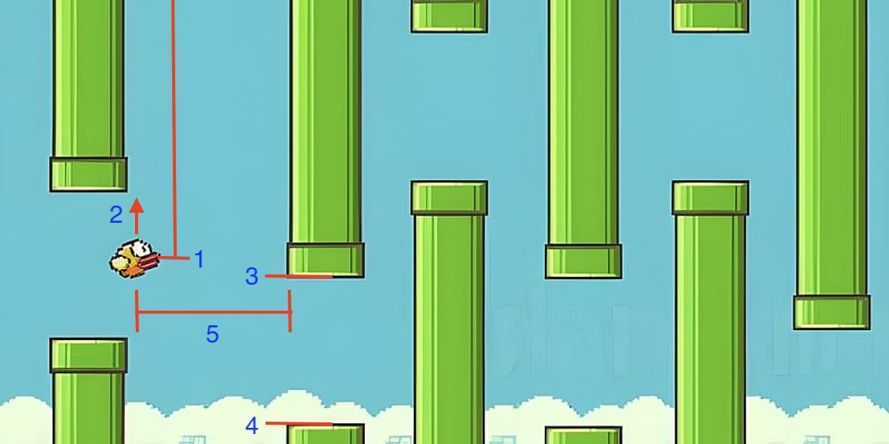
Figure 10.19: A possible network architecture for three inputs and one regression output
Unlike the iris classification network, which was choosing between three labels and therefore had three outputs, this network is just trying to predict one number, so it only has one output. I’ll note, however, that a single output isn’t a requirement of regression. A machine learning model can also perform a regression that predicts multiple continuous values, in which case the model would have multiple outputs.
ml5.js Syntax
The ml5.js library is a collection of machine learning models that can be accessed using the syntax ml5.functionName(). For example, to use a pretrained model that detects hand positions, you can use ml5.handpose(). For classifying images, you can use ml5.imageClassifier(). While I encourage you to explore all that ml5.js has to offer (I’ll reference some of these pretrained models in upcoming exercise ideas), for this chapter I’ll focus on only one function in ml5.js, ml5.neuralNetwork(), which creates an empty neural network for you to train.
To use this function, you must first create a JavaScript object that will configure the model being created. Here’s where some of the big-picture factors I just discussed—Is this a classification or a regression task? How many inputs and outputs?—come into play. I’ll begin by specifying the “task” I want the model to perform: "regression" or "classification".
let options = { task: "classification" };
let classifier = ml5.neuralNetwork(options);
This, however, gives ml5.js very little to go on in terms of designing the network architecture. Adding the inputs and outputs will complete the rest of the puzzle. In the case of iris flower classification, there are four inputs and three possible output labels. This can be configured as part of the options object with a single integer for the number of inputs and an array of strings listing the output labels.
let options = {
inputs: 4,
outputs: ["iris-setosa", "iris-virginica", "iris-versicolor"],
task: "classification",
};
let digitClassifier = ml5.neuralNetwork(options);
The electricity regression scenario involved three input values (occupants, size, temperature) and one output value (usage in kWh). With regression, there are no string output labels, so only an integer indicating the number of outputs is required.
let options = {
inputs: 3,
outputs: 1,
task: "regression",
};
let energyPredictor = ml5.neuralNetwork(options);
There are many other properties of the model that you can set through the options object. For example, you could specify the number of hidden layers between the inputs and outputs (there are typically several), the number of neurons in each layer, which activation functions to use, and more. In most cases, however, you can leave these extra settings out and let ml5.js make its best guess on how to design the model based on the task and data at hand.
Building a Gesture Classifier
I’ll now walk through the steps of the machine learning lifecycle with an example problem well suited for p5.js, building al the code for each step along the way using ml5.js. I’ll begin at step 0 by articulating the problem. Imagine for a moment that you’re working on an interactive application that responds to gestures. Maybe the gestures are ultimately meant to be recorded via body tracking, but you want to start with something much simpler—a single stroke of the mouse (see Figure 10.20).
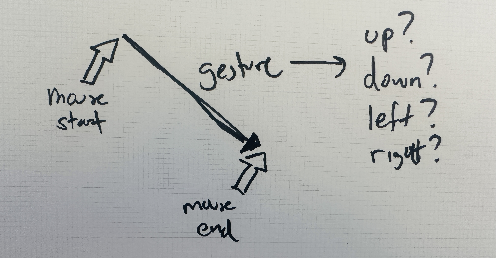
Figure 10.20:A single mouse gesture as a vector between a start and end point
Each gesture could be recorded as a vector extending from the start to the end point of a mouse movement. The x and y components of the vector will be the model’s inputs. The model’s task could be to predict one of four possible labels for the gesture: “up,” “down,” “left,” or “right.” With a discrete set of possible outputs, this sounds like a classification problem. The four labels will be the model’s outputs.
Much like some of the genetic algorithm demonstrations in Chapter 9—and like the simple perceptron example earlier in this chapter—I should note that I’m selecting a problem here that has a known solution and could be solved more easily and efficiently without a neural network. The direction of a vector can be classified with the heading() function and a series of if statements! However, by using this seemingly trivial scenario, I hope to explain the process of training a machine learning model in an understandable and friendly way. Additionally, it will make it easy to check if the code is working as expected. When I’m done, I’ll provide some ideas about how to expand the classifier to a scenario where simple if statements wouldn’t apply.
Collecting and Preparing the Data
With the problem established, I can turn to steps 1 and 2: collecting and preparing the data. In the real world, these steps can be quite tedious, especially when the raw data you collect is messy and needs a lot of initial processing. You can think of this like having to organize, wash, and chop all your ingredients before you can start cooking a meal from scratch.
For simplicity, I’d instead like to take the approach of ordering a machine learning “meal kit,” where the ingredients (data) are already portioned and prepared. This way, I’ll get straight to the cooking itself, the process of training the model. After all, this is really just an appetizer for what will be the ultimate meal next chapter, when I get to applying neural networks to steering agents.
With that in mind, I’ll hand-code some example data and manually keep it normalized within a range of –1 and +1. I’ll organize the data into an array of objects, pairing the x,y components of a vector with a string label. I’m picking values that I feel clearly point in a specific direction and assigning the appropriate label—two examples per label.
Figure 10.21 shows the same data expressed as arrows.
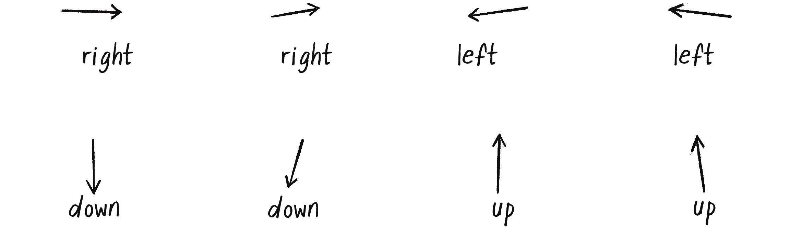
Figure 10.21: The input data visualized as vectors (arrows)
In a more realistic scenario, I’d probably have a much larger dataset that would be loaded in from a separate file, instead of written directly into the code. For example, JSON (JavaScript Object Notation) and CSV (Comma-Separated Values) are two popular formats for storing and loading data. JSON stores data in key-value pairs and follows the same exact format as JavaScript object literals. CSV is a file format that stores “tabular” data (like a spreadsheet). There are numerous other data formats you could use depending on your needs what programming environment you’re working with.
In the real world, the values in that larger data set would actually come from somewhere. Maybe I would collect the data by asking users to perform specific gestures and recording their inputs, or by writing an algorithm to automatically generate larger amounts of synthetic data that represent the idealized versions of the gestures I want the model to recognize. In either case, the key would be to collect a diverse set of examples that adequately represent the variations in how the gestures might be performed. For now, however, let’s see how it goes with just a few servings of data.
Exercise 10.4
Create a p5.js sketch that collects gesture data from users and saves it to a JSON file. You can use mousePressed() and mouseReleased() to mark the start and end of each gesture, and saveJSON() to download the data into a file.
Choosing a Model
I’ve now come to step 3 of the machine learning lifecycle, selecting a model. This is where I’m going to start letting ml5.js do the heavy lifting for me. To create the model with ml5.js, all I need to do is specify the task, the inputs, and the outputs.
let options = {
task: "classification",
inputs: 2,
outputs: ["up", "down", "left", "right"],
debug: true
};
let classifier = ml5.neuralNetwork(options);
That’s it! I’m done! Thanks to ml5.js, I can bypass a host of complexities such as how many layers and neurons per layer to have, what kind of activation functions to use, and how to set up the algorithms for training the network. The library will make these decisions for me.
Of course, the default ml5.js model architecture may not be perfect for all cases. I encourage you to read the ml5.js reference for additional details on how to customize the model. I’ll also point out that ml5.js is able to infer the inputs and outputs from the data itself, so those properties aren’t entirely necessary to include here in the options object. However, for the sake of clarity (and since I’ll need to specify them for later examples), I’m including them here.
The debug property, when set to true, turns on a visual interface for the training process. It’s a helpful tool for spotting potential issues during training and for getting a better understanding of what’s happening behind the scenes. You’ll see what this interface looks like later in the chapter.
Training the Model
Now that I have the data in a data variable and a neural network initialized in the classifier variable, I’m ready to train the model. That process starts with adding the data to the model. And for that, it turns out I’m not quite done with preparing the data.
Right now, my data is neatly organized in an array of objects, each containing the x,y components of a vector and a corresponding string label. This is a very typical format for training data, but it isn’t directly consumable by ml5.js. (Sure, I could have initially organized the data into a format that ml5.js recognizes, but I’m including this extra step because it will likely be necessary when you’re using a “real” dataset that has been collected or sourced elsewhere.) To add the data to the model, I need to separate the inputs from the outputs, so the model understands which are which.
The ml5.js library offers a fair amount of flexibility in the kinds of formats it will accept, but I’ll choose to use arrays—one for the inputs and one for the outputs. I can use a loop to reorganize each data item and add it to the model.
for (let item of data) {
// An array of 2 numbers for the inputs
let inputs = [item.x, item.y];
// A single string label for the output
let outputs = [item.label];
//{!1} Add the training data to the classifier.
classifier.addData(inputs, outputs);
}
What I’ve done here is set the shape of the data. In machine learning, this term describes the data’s dimensions and structure. It indicates how the data is organized in terms of rows, columns, and potentially even deeper, into additional dimensions. Understanding the shape of your data is crucial because it determines how the model should be structured.
Here, the input data’s shape is a one-dimensional array containing two numbers (representing x and y). The output data, similarly, is a one-dimensional array containing just a single string label. Every piece of data going in and out of the network will follow this pattern. While this is a very small and simple example, it nicely mirrors many real-world scenarios where the inputs are numerically represented in an array, and outputs are string labels.
After passing the data into the classifier, ml5.js provides a helper function to normalize it. As I’ve mentioned, normalizing data (adjusting the scale to a standard range) is a critical step in the machine learning process.
// Normalize the data.
classifier.normalizeData();
In this case, the hand-coded data was limited to a range of –1 to +1 from the get-go, so calling normalizeData() here is likely redundant. Still, this function call is important to demonstrate. Normalizing your data ahead of time as part of the preprocessing step will absolutely work, but the auto-normalization feature of ml5.js is a big help!
Now for the heart of the machine learning process: actually training the model. Here’s the code:
// The train() method initiates the training process.
classifier.train(finishedTraining);
// A callback function for when the training is complete
function finishedTraining() {
console.log("Training complete!");
}
Yes, that’s it! After all, the hard work has already been completed. The data was collected, prepared, and fed into the model. All that remains is to call the train() method, sit back, and let ml5.js do its thing.
In truth, it isn’t quite that simple. If I were to run the code as written and then test the model, the results would probably be inadequate. Here’s where another key term in machine learning comes into play: epochs. The train() method tells the neural network to start the learning process. But how long should it train for? You can think of an epoch as one round of practice, one cycle of using the entire training dataset to update the weights of the neural network. Generally speaking, the more epochs you go through, the better the network will perform, but at a certain point there are diminishing returns. The number of epochs can be set by passing in an options object into train().
//{!1} Setting the number of epochs for training
let options = { epochs: 25 };
classifier.train(options, finishedTraining);
The number of epochs is an example of a hyperparameter, a global setting for the training process. There are others that you can also set through the options object (the learning rate, for example), but I’m going to stick with the defaults. You can read more about customization options in the ml5.js reference.
The second argument to train() is optional, but it’s good to include one. It specifies a callback function that runs when the training process is complete—in this case, finshedTraining(). (See the “Callbacks” box for more on callback functions.) This is useful for knowing when you can proceed to the next steps in your code. There’s even another optional callback, which I usually name whileTraining(), that’s triggered after each epoch. However, for my purposes, knowing when the training is done is plenty!
Callbacks
A callback function in JavaScript is a function you don’t actually call yourself. Instead, you provide it as an argument to another function, intending for it to be “called back” automatically at a later time (typically associated with an event, like a mouse press). You’ve seen this before when working with Matter.js in Chapter 6, where you specified a function to call whenever a collision is detected.
Callbacks are needed for asynchronous operations, where you want your code to continue along with animating or doing other things while waiting for another task (like training a machine learning model) to finish. A classic example of this in p5.js is loading data into a sketch with loadJSON().
In JavaScript, there’s also a more recent approach for handling asynchronous operations known as promises. With promises, you can use keywords like async and await to make your asynchronous code look more like traditional synchronous code. While ml5.js also supports this style, I’ll stick to using callbacks to stay aligned with p5.js style.
Evaluating the Model
If debug is set to true in the initial call to ml5.neuralNetwork(), a visual interface should appear once train() is called, covering most of the p5.js page and canvas (see Figure 10.21). This interface, called the Visor, represents the evaluation step.
Figure 10.21: The Visor, with a graph of the loss function and model details
The Visor comes from TensorFlow.js (which underlies ml5.js) and includes a graph that provides real-time feedback on the progress of the training. This graph plots the loss of the model on the y-axis against the number of epochs along the x-axis. Loss is a measure of how far off the model’s predictions are from the correct outputs provided by the training data. It quantifies the model’s total error. When training begins, it’s common for the loss to be high because the model has yet to learn anything. Ideally, as the model trains through more epochs, it should get better at its predictions, and the loss should decrease. If the graph goes down as the epochs increase, this is a good sign!
Running the training for the 200 epochs depicted in Figure 10.21 might strike you as a bit excessive. In a real-world scenario with more extensive data, I would probably use fewer epochs, like the 25 I specified in the original code snippet. However, because the dataset here is so tiny, the higher number of epochs helps the model get enough “practice” with the data. Remember, this is a “toy” example, aiming to make the concepts clear rather than to produce a sophisticated machine learning model.
Below the graph, the Visor shows a Model Summary table with details on the lower-level TensorFlow.js model architecture created behind the scenes. The summary includes layer names, neuron counts per layer (in the Output Shape column), and a “parameters” count, which is the total number of weights, one for each connection between two neurons. In this case, dense_Dense1 is the hidden layer with 16 neurons (an amount chosen by ml5.js), and dense_Dense2 is the output layer with 4 neurons, one for each classification category. (TensorFlow.js doesn’t think of the inputs as a distinct layer; rather, they’re merely the starting point of the data flow.) The “batch” in the Output Shape column doesn’t refer to a specific number, but indicates that the model can process a variable amount of training data (a “batch”) for any single cycle of model training.
Before moving on from the evaluation stage, there’s a loose end to tie up. When I first outlined the steps of the machine learning lifecycle, I mentioned that preparing the data typically involves splitting the dataset into three parts to help with the evaluation process:
Training. The primary dataset used to train the model.
Validation. A subset of the data used to check the model during training, typically at the end of each epoch.
Testing. Additional untouched data never considered during the training process, for determining the model’s final performance after the training is completed.
You may have noticed that I never did this. For simplicity, I’ve instead used the entire dataset for training. After all, my dataset only has eight records; it’s much too small to divide three different sets! With a large dataset, this three-way split would be more appropriate.
Using such a small dataset risks the model overfitting the data, however, a situation where the model becomes so tuned to the specific peculiarities of the training data that it’s much less effective when working with new, unseen data. The main reason to use a validation set is to monitor the model during the training process. As training progresses, if the model’s accuracy improves on the training data but deteriorates on the validation data, it’s a strong indicator that overfitting might be occurring. (The testing set is reserved strictly for the final evaluation, one more chance after training is complete to gauge the’s model’s performance.)
For more realistic scenarios, ml5.js provides a way to split up the data, as well as some automatic features for employing validation data. If you’re inclined to go further, you can explore the full set of neural network examples at ml5js.org.
Tuning the Parameters
After the evaluation step, there’s typically an iterative process of adjusting hyperparameters and going through training again to achieve the best performance from the model. While ml5.js offers some capabilities for parameter tuning (which you can learn about in the library’s reference), it isn’t really geared toward making low-level, fine-grained adjustments to a model. Using TensorFlow.js directly might be your best bet if you want to explore this step in more detail, since it offers a broader suite of tools and allows for lower-level control over the training process.
In this case, tuning the parameters isn’t strictly necessary. The graph in the Visor shows a loss all the way down at 0.1, which is plenty accurate for my purposes. I’m happy to move on.
Deploying the Model
It’s finally time to deploy the model and see the payoff of all that hard work. This typically involves integrating the model into a separate application to make predictions or decisions based on new, previously unseen data. For this, ml5.js offers the convenience of a save() function to download the trained model to a file from one sketch and a load() function to load it for use in a completely different sketch. This saves you from having to retrain the model from scratch every single time you need it.
While a model would typically be deployed to a different sketch from the one where it was trained, I’m going to deploy the model in the same sketch for the sake of simplicity. In fact, once the training process is complete, the resulting model is, in essence, already deployed in the current sketch. It’s saved in the classifier variable and can be used to make predictions by passing the model new data through the classify() method. The shape of the data sent to classify() should match the that of the input data used in training—in this case, two floating point numbers, representing the x and y components of a direction vector.
// Manually creating a vector
let direction = createVector(1, 0);
// Converting the x and y components into an input array
let inputs = [direction.x, direction.y];
// Asking the model to classify the inputs
classifier.classify(inputs, gotResults);
The second argument to classify() is another callback function where the results can be accessed.
function gotResults(results) {
console.log(results);
}
The model’s prediction arrives in the argument to the callback, which I’m calling results in the code. Inside, you’ll find an array of the possible labels, sorted by confidence, a probability value that the model assigns to each label. These probabilities represent how sure the model is of that particular prediction. They range from 0 to 1, with values closer to 1 indicating higher confidence and values near 0 suggesting lower confidence.
In the example output here, the model is highly confident (approximately 96.7 percent) that the correct label is "right", while it has minimal confidence (0.03 percent) in the "left" label. The confidence values are normalized and add up to 100 percent.
All that remains now is to fill out the sketch with code so the model can receive live input from the mouse. The first step is to signal the completion of the training process so the user knows the model is ready. I’ll include a global status variable to track the training process and ultimately display the predicted label on the canvas. The variable is initialized to "training" but updated to "ready" through the finishedTraining() callback.
// When the sketch starts, it will show a status of “training.”
let status = "training";
function draw() {
background(255);
textAlign(CENTER, CENTER);
textSize(64);
text(status, width / 2, height / 2);
}
// This is the callback for when training is complete, and the message changes to “ready.”
function finishedTraining() {
status = "ready";
}
Finally, I’ll use p5.js’s mouse functions to build a vector while the mouse is being dragged and call classifier.classify() on that vector when the mouse is released.
Example 10.2: Gesture Classifier
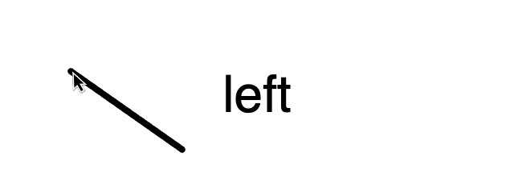
// Store the start of a gesture when the mouse is pressed.
function mousePressed() {
start = createVector(mouseX, mouseY);
}
// Update the end of a gesture as the mouse is dragged.
function mouseDragged() {
end = createVector(mouseX, mouseY);
}
// The gesture is complete when the mouse is released.
function mouseReleased() {
// Calculate and normalize a direction vector.
let dir = p5.Vector.sub(end, start);
dir.normalize();
// Convert to an inputs array and classify.
let inputs = [dir.x, dir.y];
classifier.classify(inputs, gotResults);
}
// Store the resulting label in the status variable for showing in the canvas.
function gotResults(error, results) {
status = results[0].label;
}
Since the results array is sorted by confidence, if I just want to use a single label as the prediction, I can access the first element of the array with results[0].label, as in the gotResults() function in Example 10.2. This label is passed to the status variable to be displayed on the canvas.
Exercise 10.5
Divide Example 10.2 into three different sketches, one for collecting data, one for training, and one for deployment. Use the ml5.neuralNetwork functions save() and load() for saving and loading the model to and from a file.
Exercise 10.6
Expand the gesture recognition model to classify a sequence of vectors, capturing more accurately the path of a longer mouse movement. Remember, your input data must have a consistent shape, so you’ll have to decide how many vectors to use to represent a gesture and store no more and no less for each data point. While this approach can work, other machine learning models (such as recurrent neural networks) are specifically designed to handle sequential data and might offer more flexibility and potential accuracy.
Exercise 10.7
One of the pretrained models in ml5.js is called Handpose. The input of the model is an image and the prediction is a list of 21 keypoints (x,y positions, also known as “landmarks”) that describe a hand.
Can you use the outputs of the ml5.handpose() model as the inputs to an ml5.neuralNetwork() and classify different hand gestures (like a thumbs up or thumbs down)? For hints, you can watch my video tutorial that walks you through this process for body poses in the machine learning track on thecodingtrain.com.
The Ecosystem Project
Step 10 Exercise:
Incorporate machine learning into your ecosystem to enhance the behavior of creatures. How could classification or regression be applied?
Can you classify the creatures of your ecosystem into different categories? What if you use an initial population as a training dataset, and as new creatures are born, the system classifies them according to their features? What are the inputs and outputs for your system?
Can you use a regression to predict the lifespan of a creature based on its properties? Think about how size and speed affected the lifespan of the bloops from Chapter 9. Could you analyze how well the regression model’s predictions align with the actual outcomes?